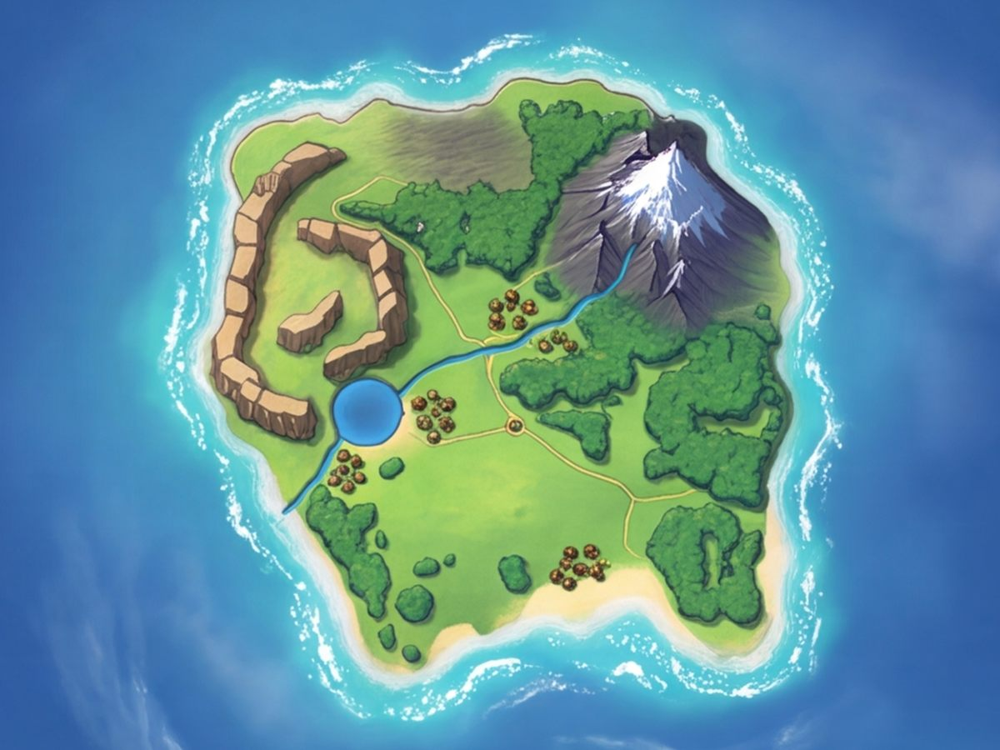

Human continent
The Island
Normal realmOpen nowLv 1-40
Where every oath begins. A green, welcoming land of beaches, meadows and forest, ruled from a royal capital at its heart. Something is wrong here all the same: Rifts have opened on the southern plains and beyond the Mountain Outpost, and the monsters grow bolder each season.
- People
- Humans, in every town from the royal Capital to the fishing village on the bay
- Lands
- Sandy beaches, open meadows and patchy woods, a ring of sheer mesas around the western wilds, and a river running from the snowy Eastern Peaks down to a lake and out to sea
- Places
- Forest Hamlet, the Capital, Fishing Town, the Mountain Outpost and the summit of the Eastern Peaks
- Danger
- Two Rifts into the Demon Realm: the AntiForest and the Goblin Warrens, both party dungeons